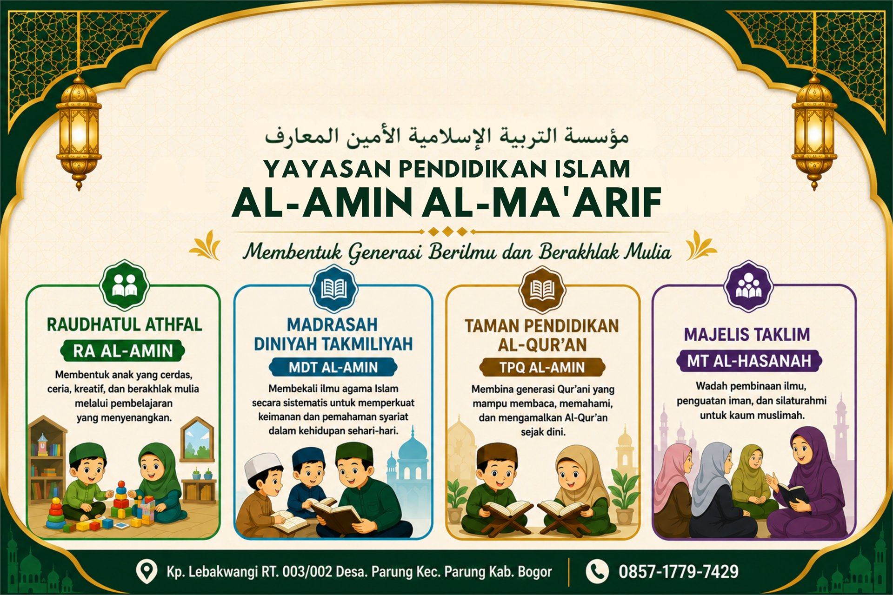

Visi
Menjadi lembaga pendidikan Islam yang unggul dalam membentuk generasi yang berilmu, beriman, berakhlak mulia, mandiri, dan bermanfaat bagi umat.

Yayasan Pendidikan Islam Al-Amin Al-Ma'arif merupakan yayasan pendidikan Islam yang menaungi berbagai lembaga pendidikan dan pembinaan keagamaan mulai dari Raudhatul Athfal (RA) Al-Amin, Taman Pendidikan Al-Qur'an (TPQ) Al-Amin, Madrasah Diniyah Takmiliyah (MDT) Al-Amin, Pesantren Salafiyah Khusus Putri Al-Amin, hingga Majelis Taklim Al-Hasanah untuk ibu-ibu pengajian.
Yayasan hadir sebagai bagian dari ikhtiar dalam membangun generasi yang berilmu, beriman, berakhlak mulia, mandiri, serta mampu memberikan manfaat bagi agama, bangsa, dan masyarakat.
Sekilas sambutan dari Ketua Yayasan Pendidikan Islam Al-Amin Al-Ma'arif.
Ketua Yayasan
Menjadi lembaga pendidikan Islam yang unggul dalam membentuk generasi yang berilmu, beriman, berakhlak mulia, mandiri, dan bermanfaat bagi umat.
Seluruh unit pendidikan yang berada di bawah naungan Yayasan Pendidikan Islam Al-Amin Al-Ma'arif.
Dokumentasi berbagai kegiatan Yayasan Pendidikan Islam Al-Amin Al-Ma'arif.
Video terbaru dari kanal YouTube Yayasan.
Pilih unit pendidikan dan lakukan pendaftaran secara online.
Salurkan donasi terbaik Anda untuk mendukung pengembangan pendidikan Islam.